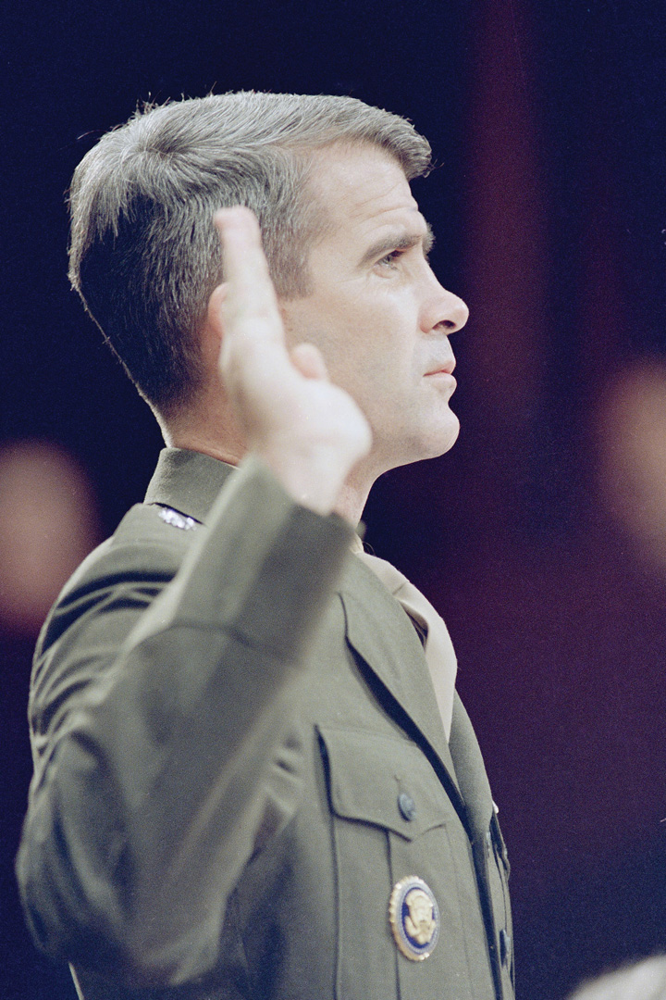
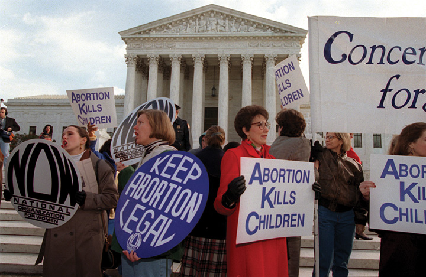

The mass media are obsessed with law and order. Police shows and news about the police abound. The opening voice-over of the Fox television network series Cops intones that the show “is filmed on location with the men and women of law enforcement.” Camera crews accompany police officers through the streets of America’s cities, shooting many hours of real-life video to edit down to half-hour programs showing police catching culprits. The police officers are the only narrators. Series producers say, “The goal is to put you in the passenger seat with them so you can experience what it is like to be a cop.”Quoted in Aaron Doyle, “‘Cops’: Television Policing as Policing Reality,” in Entertaining Crime: Television Reality Programs, ed. Mark Fishman and Gray Cavender (New York: Aldine de Gruyter, 1998), 95–116, quote at 101.
Cops’ approach to criminal justice is summarized in its theme music: “Bad boys, bad boys, what’cha gonna do? What’cha gonna do when they come for you?” The outcome is always the same: the “bad boys” (and bad girls) are shown to be criminals deserving to be hauled in. The end of each episode reassures us that the police are working hard to stop crime. Other central concerns of American politics—and specifically the civil liberties of individuals—are submerged. Suspects are seldom informed of their rights, rarely request a lawyer, and are not “presumed innocent until proven guilty.”
Civil liberties do appear in the media. The news media sometimes spotlight police abuses of people’s liberties: for example, in 1991 they repeatedly aired a clip of Los Angeles police officers beating Rodney King violently with their batons—an incident that was caught on videotape by a bystander. A familiar plot in fiction is the plight of the wrongly accused.
Indeed, the media are often stalwart defenders of civil liberties because freedom of the press is so crucial to their own activities. Civil libertiesThe rights and freedoms of individuals that government may not infringe on, mostly listed in the Bill of Rights. are the rights and freedoms of individuals that the Constitution says government should not infringe on. What these freedoms entail is much disputed in American politics and affects a wide range of policies.
After reading this section, you should be able to answer the following questions:
The foundation of civil liberties is the Bill of RightsThe first ten amendments to the Constitution, adopted in 1789 and ratified in 1791., the ten amendments added to the Constitution in 1791 to restrict what the national government may do.
The state conventions that ratified the Constitution obtained promises that the new Congress would consider adding a Bill of Rights. James Madison—the key figure in the Constitutional Convention and an exponent of the Constitution’s logic in the Federalist papers—was elected to the first House of Representatives. Keeping a campaign promise, he surveyed suggestions from state-ratifying conventions and zeroed in on those most often recommended. He wrote the amendments not just as goals to pursue but as commands telling the national government what it must do or what it cannot do. Congress passed twelve amendments, but the Bill of Rights shrank to ten when the first two (concerning congressional apportionment and pay) were not ratified by the necessary nine states.
The Bill of Rights
View the Bill of Rights online at http://www.archives.gov/exhibits/charters/bill_of_rights.html.
The first eight amendments that were adopted address particular rights. The Ninth Amendment addressed the concern that listing some rights might undercut unspoken natural rights that preceded government. It states that the Bill of Rights does not “deny or disparage others retained by the people.” This allows for unnamed rights, such as the right to travel between states, to be recognized. We discussed the Tenth Amendment in Chapter 3 "Federalism", as it has more to do with states’ rights than individual rights.
Even before the addition of the Bill of Rights, the Constitution did not ignore civil liberties entirely. It states that Congress cannot restrict one’s right to request a writ of habeas corpusA writ issued by a judge asking the government for the reasons for a person’s arrest; the Constitution protects an individual’s right to ask for such a writ. giving the reasons for one’s arrest. It bars Congress and the states from enacting bills of attainderLaws prohibited by the Constitution that punish a named individual without judicial proceedings. (laws punishing a named person without trial) or ex post facto lawsLaws prohibited by the Constitution that retroactively make a legal act a crime. (laws retrospectively making actions illegal). It specifies that persons accused by the national government of a crime have a right to trial by jury in the state where the offense is alleged to have occurred and that national and state officials cannot be subjected to a “religious test,” such as swearing allegiance to a particular denomination.
The Bill of Rights contains the bulk of civil liberties. Unlike the Constitution, with its emphasis on powers and structures, the Bill of Rights speaks of “the people,” and it outlines the rights that are central to individual freedom.This section draws on Robert A. Goldwin, From Parchment to Power (Washington, DC: American Enterprise Institute, 1997).
The main amendments fall into several broad categories of protection:
Congress and the executive have relied on the Bill of Rights to craft public policies, often after public debate in newspapers.This theme is developed in Michael Kent Curtis, Free Speech, “The People’s Darling Privilege”: Struggles for Freedom of Expression in American History (Durham, NC: Duke University Press, 2000). Civil liberties expanded as federal activities grew.
Figure 4.1 Frederick Douglass and the North Star

The ex-slave Frederick Douglass, like many prominent abolitionists, published a newspaper. Much of the early debate over civil liberties in the United States revolved around the ability to suppress such radical statements.
The first big dispute over civil liberties erupted when Congress passed the Sedition Act in 1798, amid tension with revolutionary France. The act made false and malicious criticisms of the government—including Federalist president John Adams and Congress—a crime. While printers could not be stopped from publishing, because of freedom of the press, they could be punished after publication. The Adams administration and Federalist judges used the act to threaten with arrest and imprisonment many Republican editors who opposed them. Republicans argued that freedom of the press, before or after publication, was crucial to giving the people the information they required in a republic. The Sedition Act was a key issue in the 1800 presidential election, which was won by the Republican Thomas Jefferson over Adams; the act expired at the end of Adams’s term.See James Morton Smith, Freedom’s Fetters: The Alien and Sedition Laws and American Civil Liberties (Ithaca, NY: Cornell University Press, 1956). For how the reaction to the Sedition Act produced a broader understanding of freedom of the press than the Bill of Rights intended, see Leonard W. Levy, Emergence of a Free Press (New York: Oxford University Press, 1985).
Debates over slavery also expanded civil liberties. By the mid-1830s, Northerners were publishing newspapers favoring slavery’s abolition. President Andrew Jackson proposed stopping the US Post Office from mailing such “incendiary publications” to the South. Congress, saying it had no power to restrain the press, rejected his idea. Southerners asked Northern state officials to suppress abolitionist newspapers, but they did not comply.Michael Kent Curtis, Free Speech, “The People’s Darling Privilege”: Struggles for Freedom of Expression in American History (Durham, NC: Duke University Press, 2000), especially chaps. 6–8, quote at 189.
As the federal government’s power grew, so too did concerns about civil liberties. When the United States entered the First World War in 1917, the government jailed many radicals and opponents of the war. Persecution of dissent caused Progressive reformers to found the American Civil Liberties Union (ACLU) in 1920. Today, the ACLU pursues civil liberties for both powerless and powerful litigants across the political spectrum. While it is often deemed a liberal group, it has defended reactionary organizations, such as the American Nazi Party and the Ku Klux Klan, and has joined powerful lobbies in opposing campaign finance reform as a restriction of speech.
In Chapter 5 "Civil Rights", we discuss the Fourteenth Amendment, added to the Constitution in 1868, and how its due process clauseSection of the Fifth Amendment that prohibits the federal government from depriving individuals of “life, liberty or property without due process of law.”, which bars states from depriving persons of “life, liberty, or property, without due process of law,” is the basis of civil rights. The Fourteenth Amendment is crucial to civil liberties, too. The Bill of Rights restricts only the national government; the Fourteenth Amendment allows the Supreme Court to extend the Bill of Rights to the states.
The Supreme Court exercised its new power gradually. The Court followed selective incorporationSupreme Court’s application of the protections of the Bill of Rights one by one to the states after it has decided that each is “incorporated” into (inherent in) the Fourteenth Amendment’s protection of liberty against state actions.: for the Bill of Rights to extend to the states, the justices had to find that the state law violated a principle of liberty and justice that is fundamental to the inalienable rights of a citizen. Table 4.1 "The Supreme Court’s Extension of the Bill of Rights to the States" shows the years when many protections of the Bill of Rights were applied by the Supreme Court to the states; some have never been extended at all.
Table 4.1 The Supreme Court’s Extension of the Bill of Rights to the States
| Date | Amendment | Right | Case |
| 1897 | Fifth | Just compensation for eminent domain | Chicago, Burlington & Quincy Railroad v. City of Chicago |
| 1925 | First | Freedom of speech | Gitlow v. New York |
| 1931 | First | Freedom of the press | Near v. Minnesota |
| 1932 | Fifth | Right to counsel | Powell v. Alabama (capital cases) |
| 1937 | First | Freedom of assembly | De Jonge v. Oregon |
| 1940 | First | Free exercise of religion | Cantwell v. Connecticut |
| 1947 | First | Nonestablishment of religion | Everson v. Board of Education |
| 1948 | Sixth | Right to public trial | In Re Oliver |
| 1949 | Fourth | No unreasonable searches and seizures | Wolf v. Colorado |
| 1958 | First | Freedom of association | NAACP v. Alabama |
| 1961 | Fourth | Exclusionary rule excluding evidence obtained in violation of the amendment | Mapp v. Ohio |
| 1962 | Eighth | No cruel and unusual punishment | Robinson v. California |
| 1963 | First | Right to petition government | NAACP v. Button |
| 1963 | Fifth | Right to counsel (felony cases) | Gideon v. Wainwright |
| 1964 | Fifth | Immunity from self-incrimination | Mallory v. Hogan |
| 1965 | Sixth | Right to confront witnesses | Pointer v. Texas |
| 1965 | Fifth, Ninth, and others | Right to privacy | Griswold v. Connecticut |
| 1966 | Sixth | Right to an impartial jury | Parker v. Gladden |
| 1967 | Sixth | Right to a speedy trial | Klopfer v. N. Carolina |
| 1969 | Fifth | Immunity from double jeopardy | Benton v. Maryland |
| 1972 | Sixth | Right to counsel (all crimes involving jail terms) | Argersinger v. Hamlin |
| 2010 | Second | Right to keep and bear arms | McDonald v. Chicago |
| Rights not extended to the states | |||
| Third | No quartering of soldiers in private dwellings | ||
| Fifth | Right to grand jury indictment | ||
| Seventh | Right to jury trial in civil cases under common law | ||
| Eighth | No excessive bail | ||
| Eighth | No excessive fines | ||
Many landmark Supreme Court civil-liberties cases were brought by unpopular litigants: members of radical organizations, publishers of anti-Semitic periodicals or of erotica, religious adherents to small sects, atheists and agnostics, or indigent criminal defendants. This pattern promotes a media frame suggesting that civil liberties grow through the Supreme Court’s staunch protection of the lowliest citizen’s rights.
The finest example is the saga of Clarence Gideon in the book Gideon’s Trumpet by Anthony Lewis, then the Supreme Court reporter for the New York Times. The indigent Gideon, sentenced to prison, protested the state’s failure to provide him with a lawyer. Gideon made a series of handwritten appeals. The Court heard his case under a special procedure designed for paupers. Championed by altruistic civil-liberties experts, Gideon’s case established a constitutional right to have a lawyer provided, at the state’s expense, to all defendants accused of a felony.Anthony Lewis, Gideon’s Trumpet (New York: Vintage Books, 1964). Similar storylines often appear in news accounts of Supreme Court cases. For example, television journalists personalize these stories by interviewing the person who brought the suit and telling the touching individual tale behind the case.Richard Davis, Decisions and Images: The Supreme Court and the News Media (Englewood Cliffs, NJ: Prentice-Hall, 1994).
This mass-media frame of the lone individual appealing to the Supreme Court is only part of the story. Powerful interests also benefit from civil-liberties protections. Consider, for example, freedom of expression: Fat-cat campaign contributors rely on freedom of speech to protect their right to spend as much money as they want to in elections. Advertisers say that commercial speech should be granted the same protection as political speech. Huge media conglomerates rely on freedom of the press to become unregulated and more profitable.Frederick Schauer, “The Political Incidence of the Free Speech Principle,” University of Colorado Law Review 64 (1993): 935–57.
Many officials have to interpret the guarantees of civil liberties when making decisions and formulating policy. They sometimes have a broader awareness of civil liberties than do the courts. For example, the Supreme Court found in 1969 that two Arizona newspapers violated antitrust laws by sharing a physical plant while maintaining separate editorial operations. Congress and the president responded by enacting the Newspaper Preservation Act, saying that freedom of the press justified exempting such newspapers from antitrust laws.
In this section we defined civil liberties as individual rights and freedoms that government may not infringe on. They are listed primarily in the Bill of Rights, the ten amendments added in 1791 by the founders to address fears about the new federal government’s potential to abuse power. Initially limited to the federal government, they now apply, though unevenly, to the states. What those liberties are and how far they extend are the focus of political conflict. They are shaped by the full range of people, processes, and institutions in American politics. Both unpopular minorities and powerful interests claim civil liberties protections to gain favorable outcomes.
After reading this section, you should be able to answer the following questions:
Civil liberties touch upon many issues. In the next two sections, we describe the current interpretation of each right and outline the policies it affects.
The First Amendment addresses freedom of religion in two distinct clauses: the establishment clause and the free expression clause.
Rejecting the British legacy of “established” churches, the establishment clauseSection of the First Amendment that prohibits the government from recognizing an official religion. bars Congress from giving any religion an official status. In Jefferson’s much-quoted line, the establishment clause erects a “wall of separation between church and state.” A public policy may advance religious objectives only if its aim and main effect have nothing to do with religion. Thus a law forcing stores to close on Sundays can be justified to require employers to give staff a day off but not to enforce a Sabbath.Lemon v. Kurtzman, 403 US 602 (1971).
The separation of church and state has generated high-profile controversies. The drama surrounding such confrontations is often captured by the press. In the 1920s, John Thomas Scopes was found guilty of teaching evolution in violation of a Tennessee law requiring that the Bible’s version of creation be taught in public schools. Scopes’s trial, portrayed in the stage play and film Inherit the Wind, was a precursor of later battles.
The Scopes Trial
Learn more about the Scopes trial online at http://www.pbs.org/wgbh/evolution/library/08/2/l_082_01.html.
Starting in the 1960s, the Supreme Court, in a series of rulings, prohibited nondenominational state-issued prayers in school, Bible readings, moments of silence intended for prayer, and student-led prayers at graduation ceremonies and football games. (The Court did refrain from invalidating the Pledge of Allegiance for containing the words “under God.”)Respectively, Engel v. Vitale, 370 US 421 (1962); Abington School District v. Schempp, 374 US 203 (1963); Wallace v. Jaffree, 472 US 38 (1985); Lee v. Weisman, 507 US 577 (1992); and Santa Fe Independent School District v. Doe, 530 US 290 (2000). Court attempts to stop prayers are hard to enforce across the country—especially since they often receive saturation media coverage that gives most of the attention to those decrying what they see as judicial activism.
The First Amendment also says that Congress shall not prohibit the “free exercise” of religion. Individuals have the right to believe and practice their religions as they see fit. Government policies cannot target individuals’ religious practices or force actions that violate their religions.
This free exercise clauseSection of the First Amendment that prohibits the government from barring individuals from freely practicing religion. gained potency in 1943 when the Supreme Court ruled that Jehovah’s Witnesses could not be expelled from public schools for refusing to salute the American flag, an act contrary to their religion. More recently, the Supreme Court limited the clause’s reach when it ruled, in 1990, that American Indians had no right to disobey an Oregon law barring controlled substances in order to ingest peyote as part of a religious service. The Court held that laws hindering religious practices do not violate the First Amendment if they apply to all persons and do not openly refer to religion.
The establishment clause tries to keep religion out of government; the free exercise clause tries to keep government out of religion. The two objectives are not always compatible. For example, President George W. Bush proposed to allow government to contract with “faith-based” organizations to administer social programs. Opponents argued that this would violate the establishment clause by endorsing religion; Bush responded that existing policy violated the free exercise clause by discriminating against religious organizations.
The Supreme Court has held that “debate on public issues should be uninhibited, robust, and wide-open.”New York Times v. Sullivan, 376 US 254 (1964). Offensive speech is less detrimental than the “chilling effect” of individuals being silenced for fear of retribution. Nevertheless, freedom of speech is not absolute. Governments can regulate or restrict it under certain conditions.
Thoughts are deemed beyond the scope of government regulation; actions are heavily regulated by government; words are somewhere in between. The distinctions between thoughts, words, and actions are not always clear. Two cases of protest against the Vietnam War show how lines are drawn.United States v. O’Brien, 391 US 367 (1968); and Tinker v. Des Moines Independent Community School District, 393 US 503 (1969). In one, a protester burned his draft card and was charged with violating a federal law that makes it a crime to knowingly destroy draft cards. The Court upheld the law, saying that the law aimed to maintain draft records, not to stifle free expression. When two students wore black armbands to their high school to protest the war and were suspended for violating the dress code, the Court found the policy sought to suppress free expression and sided with the students.
The First Amendment does not protect speech that fails to contribute to the exchange of ideas that is crucial in a democracy—for instance, libel, obscenity, and “fighting words”—but such forms of speech are narrowly defined.
The publication of defamatory information, or libelDefamatory publication unprotected by the First Amendment; to win a libel suit, public figures must demonstrate “actual malice” revealed by a “reckless disregard for the truth.”, can be challenged in court. But officials and other public figures must demonstrate “actual malice” displayed by a “reckless disregard for the truth.”New York Times v. Sullivan, 376 US 254 (1964). Thus libel cases are hard to win. Nonetheless, some litigants sue to shame a media organization publicly or to force it to spend money defending itself in court.
There is now a right to possess most obscene material in one’s home, but not to produce, sell, or ship it. Early in the twentieth century, obscenity laws had halted the circulation of works of art such as James Joyce’s now classic novel Ulysses. In 1957, the Supreme Court shrank the definition of obscenity from anything to do with sex to “material that deals with sex in a manner appealing to prurient interest” and “utterly without redeeming social importance.” This decision forced the justices to hear dozens of cases in order to distinguish obscenity from protected speech. The results were almost comical. The often elderly justices viewed numerous pornographic films, the earthy Thurgood Marshall recounting the goings-on to his patrician, sight-impaired colleague John Harlan. At one point, Justice Potter Stewart exasperatedly wrote in one opinion, “I know it when I see it.” Finally, in 1973, the Court established three rules that must be met for material to be obscene: it appeals to a prurient interest by the standards of the local community; it depicts specified sexual conduct in a patently offensive way; and it lacks serious literary, artistic, political, or scientific value.The key cases here are Roth v. United States, 354 US 476 (1957); Stanley v. Georgia, 394 US 557 (1969); and Miller v. California, 413 US 15 (1973).
In the 1920s, the Supreme Court allowed government to bar fighting wordsSpeech, not protected by the First Amendment, that provokes people to immediate attack or acts of violence. as long as there was a “clear and present danger” of provoking an immediate attack or acts of violence. In Justice Oliver Wendell Holmes’s terms, freedom of speech does not extend to the right to falsely yell “Fire!” in a crowded theater. Such a rule allowed for suppression of radical voices. As late as 1951, the Court upheld a federal law banning advocacy of the violent overthrow of the government. But the Court, in 1969, held that speech favoring illegal action is protected unless violence is both intended and likely.Respectively, Schenck v. United States, 249 US 47 (1919); Dennis v. United States, 341 US 494 (1951); and Brandenburg v. Ohio, 395 US 444 (1969).
Even when the government cannot bar speech, it can direct its time, place, and manner. But policies may not target particular content and must provide alternative ways to express oneself. If public universities and colleges cannot ban political speeches, they may restrict them to certain parts of campus such as “Free Speech Alleys.”
Like fighting words, intimidation and harassment are not protected forms of free speech. By this logic, colleges and universities in the 1980s proposed campus speech codes to forbid the demeaning or stigmatizing of persons on the basis of race, ethnicity, gender, or sexual orientation. Proponents argued that speech codes would actually boost free speech, since “hate speech” deterred individuals who felt under attack from speaking out. But courts struck down the codes as too broad.James B. Jacobs and Kimberly Potter, Hate Crimes: Criminal Law and Identity Politics (New York: Oxford University Press, 1998), 112–21.
The media claim special privileges under the First Amendment’s guarantee of “freedom of the press.”
The government is rarely able to stop material from being published. Even the Sedition Act of 1798, discussed previously in this chapter (Section 4.1 "The Bill of Rights"), did not include this prior restraintA practice, forbidden by the First Amendment, whereby government can prevent publication.. The Supreme Court extended the ban to the states in 1931 when it struck down a Minnesota law allowing the state to suppress a “malicious, scandalous and defamatory” publication as a “public nuisance”—in this case, an abusively anti-Semitic periodical. Prior restraint is rarely justified: in 1971, the Court refused to issue an injunction sought by the executive branch against the New York Times and Washington Post on grounds of violations of national security. In the absence of the government’s proof that the national interest would be harmed, the Court allowed the publication of the Pentagon Papers, a leaked classified set of documents revealing decisions leading to the Vietnam War.Near v. Minnesota, 283 US 697 (1931); and New York Times v. United States, 403 US 713 (1971).
Reporters have privileges that the public lacks: greater access to the workings of government, the ability to question officeholders, legal protection from revealing confidential sources, and access to government public information offices that feed them quotations and stories. But such privileges stem from policy and practice, not from constitutional rights.
Laws aimed at public disclosure, such as sunshine laws preventing government from working behind closed doors, benefit reporters. The Freedom of Information Act (FOIA), enacted in 1966, allows for access to executive agencies and commissions’ records and files closed to public inspection.Herbert N. Foerstel, Freedom of Information and the Right to Know: The Origins and Applications of the Freedom of Information Act (Westport, CT: Greenwood Press, 1999). Information obtained under the FOIA provides documentation for stories like USA Today’s discovery of a huge increase in the use and dealing of crack cocaine by individuals under age fifteen. Such information can also reveal scandals. In 1990, Washington Post reporter Ann Devroy was frustrated with White House Chief of Staff John Sununu’s refusal to answer her dogged questions about his rumored use of perquisites of office for private gain. Devroy filed for documents under the FOIA and found Sununu had used government planes to get to a dentist’s appointment and to attend postage-stamp auctions. Sununu resigned in disgrace.
Public policy treats different media differently. Broadcast and cable slots, being inherently limited, can be regulated by government in ways that are not allowed for print media or the Internet.Red Lion Broadcasting Company v. Federal Communication Commission, 395 US 367 (1969) and Turner Broadcasting System, Inc. et al. v. Federal Communication Commission, 520 US 180 (1997).
The Federal Communications Commission (FCC), established in 1934, has the power to issue licenses for a given frequency on the basis of “the public interest, convenience, or necessity.” From the start, the FCC favored big commercial broadcasters aiming at large audiences. Such limits on competition enabled the establishment of hugely profitable radio (and later television) stations and networks, whose licenses—sometimes jokingly termed licenses to print money—the FCC almost automatically renewed.
The FCC has regulatory authority to penalize the broadcast media, but not cable television, for indecent content. During the halftime show at the 2004 Super Bowl, televised by CBS, singer Justin Timberlake tore the costume and briefly exposed the right breast of singer Janet Jackson. The FCC fined CBS $550,000 for the Super Bowl “wardrobe malfunction.” The fine was overturned by a federal court of appeals in July 2008. In May 2009, the Supreme Court returned the case to the court for reconsideration.
Rights to assemble and petition government allow individuals to come together as groups and voice concerns. These rights permitted groups that were denied the vote—such as women before 1920—to state views and pressure government.See Susan Zaeske, Signatures of Citizenship: Petitioning, Antislavery, and Women’s Political Identity (Chapel Hill: University of North Carolina Press, 2003), and Linda J. Lumsden, Rampant Women: Suffragists and the Right of Assembly (Knoxville: University of Tennessee Press, 1997). Social movements claim that the rights protect protesting; interest groups argue that the right to petition government includes all lobbying.
Like speech, freedom of assembly can be regulated in its time, place, and manner. Thus demonstrations outside political party conventions may be limited to given areas, sometimes far from the event. Moreover, the right is “to peaceably assemble.” Governments have the power and responsibility to ensure that protests do not turn violent. But the failure to distinguish between an assembly and a mob has resulted in tragic consequences when unarmed protesters have lost their lives (see Note 4.20 "Enduring Images").
Kent State
On May 4, 1970, at Ohio’s Kent State University, National Guardsmen fired on unarmed student protesters who had planned a noontime antiwar rally. Four students, including two passersby, died. A photographer snapped fifteen-year-old runaway Mary Ann Vecchio kneeling and screaming over Jeffrey Miller’s dead body. Another showed National Guardsmen, impersonal under gas masks, aiming rifles at defenseless students. Such images conjure up brutal, deliberate repression of rights of protest. They reappear on anniversaries of the Kent State killings, with captions like, “Americans were stunned to see photographs showing the government shooting on its own citizens, here in the world’s oldest democracy where the right of political dissent is supposedly fundamental.”Sue Schuurman, “Kent State Killings Shock Nation: 28 Years Ago This Week,” Weekly Alibi, May 11, 1998, http://weeklywire.com/ww/05-11-98/alibi_skeleton.html. The leading historian of Kent State is J. Gregory Payne, who provides a valuable narrative at May4Archive.org, http://www.may4archive.org.
National Guardsmen at Kent State
Source: Used with permission from AP Photo.
The history of these enduring images is more complex.Writings on Kent State, particularly in the immediate aftermath of the shooting, are highly politicized, with government commissions’ reports being dismissed as cover-ups of conspiracies. A balanced assessment of the literature is Thomas R. Hensley and Jerry M. Lewis, eds., Kent State and May 4th: A Social Science Perspective (Dubuque, IA: Kendall/Hunt, 1978). Protests began on college campuses on April 30, 1970, when President Richard Nixon announced an invasion of Cambodia, expanding the Vietnam War. Protests were not always peaceful. In Kent, students smashed store windows on May 1, and Kent State’s ROTC building was burned down on May 2. Ohio’s governor mobilized the National Guard to defend the campus. On May 4, the Guard, badly outnumbered, sought to stop the rally. Other photos from May 4 show students taunting the Guard, fogs of tear gas, and volleys of empty tear-gas canisters and rocks thrown at soldiers. The picture of soldiers aiming their rifles may have been an early attempt to subdue the protest without shooting. The immediate response to the shootings did not blame the Guard. Nixon’s reaction was widely reprinted: “This should remind us all once again that when dissent turns to violence it invites tragedy.”Quoted in Sue Schuurman, “Kent State Killings Shock Nation: 28 Years Ago This Week,” Weekly Alibi, May 11, 1998, http://weeklywire.com/ww/05-11-98/alibi_skeleton.html. Polls showed most of the public blamed students for the deaths and backed the Guard’s actions.See the Gallup poll from Newsweek, May 25, 1970, 30, cited in James J. Best, “Kent State: Answers and Questions,” in Kent State and May 4th: A Social Science Perspective, ed. Thomas R. Hensley and Jerry M. Lewis (Dubuque, IA: Kendall/Hunt, 1978), 25.
The enduring image, however, is of Mary Ann Vecchio. One reason is its emotional resonance: it resembles a Pietà sculpture of Mary grieving over the body of Jesus. Also, American politics after the invasion of Cambodia turned from engaging in to ending the Vietnam War—in part as a response to unrest that racked the country. And President Nixon’s law-and-order rhetoric lost support as revelations of illegal misdeeds surfaced in the Watergate scandal. By the fall of 1973, a majority in a Harris poll saw the shootings as “unjustified and repressive.”New York Post, October 3, 1973, as reported in J. Gregory Payne, “Aftermath,” May4Archive.org, http://www.may4archive.org/aftermath.shtml. As images of Kent State were winnowed down to the one picture of Mary Ann Vecchio over the body of Jeffrey Miller, the meaning of what happened at Kent State shifted from a tragic consequence of disorder to a vivid symbol of civil liberties denied.
Mary Ann Vecchio Kneeling over the Body of Jeffrey Miller
Source: Used with permission from Getty Images.
In this section we discussed the constitutional protections guaranteeing freedoms of religion, speech, the press, assembly, and petition. These important protections are far reaching but nonetheless subject to important exceptions.
After reading this section, you should be able to answer the following questions:
The Second Amendment reads, “A well-regulated militia being necessary to the security of a free state, the right to keep and bear arms shall not be infringed.” Is this a right of self-defense that is akin to the protection of one’s dwelling guaranteed by other amendments?Joyce Lee Malcolm, To Keep and Bear Arms: The Origins of an Anglo-American Right (Cambridge, MA: Harvard University Press, 1994). Or is it simply a basis for states to build militias, balancing off the standing army of the national government—in which case the gradual replacement of volunteer state militias by the National Guard rendered the Second Amendment obsolete?H. Richard Uviller and William G. Merkel, The Militia and the Right to Arms, Or, How the Second Amendment Fell Silent (Durham, NC: Duke University Press, 2002).
Most crime rates in the United States are similar to those of countries such as Canada or Australia. But the United States has a far higher rate of violent crime, in part because of the greater availability of firearms. A large majority of the public supports restrictions on the sale of firearms, but few policies have been enacted to do so. Although opponents of gun control are outnumbered, they are more likely than supporters to vote on this issue.
Policy debate on gun control usually occurs only after a dramatic, heavily covered news event like an assassination or a massacre at a school. One political scientist described the result as “furious politics, marginal policy.”Robert J. Spitzer, The Politics of Gun Control (Chatham, NJ: Chatham House, 1995), 168. For example, after the killings of Martin Luther King Jr. and Robert Kennedy in 1968, Congress debated President Lyndon Johnson’s proposal for a federal system of firearm registration and licensing of gun owners but passed only limited, ineffective legislation. In 1994, dramatic fights over banning assault weapons and mandating a waiting period for gun purchases produced a law with huge loopholes when it failed to cover gun shows.
The “right to keep and bear arms” has been debated by the public and politicians more than by courts. But in June 2008, the Supreme Court, by a vote of 5–4, ruled that individuals have the right to bear arms. This decision, an interpretation of the Second Amendment, struck down the District of Columbia’s thirty-two-year-old law banning the possession of handguns.District of Columbia v. Heller, 554 US 570 (2008). In June 2010, the Court, again by a vote of 5–4, applied the ruling to cities and states by overturning Chicago’s ban on handguns.McDonald v. Chicago, 561 US ___, 130 S.Ct. 3020 (2010). The Court has not prohibited all legislation and limitation of guns, but such governmental actions would likely conflict with the Court’s interpretation of the Second Amendment.
The Fourth Amendment prevents the government from conducting “unreasonable searches and seizures.” A reasonable search is conducted with a warrant issued by a judge and based on probable cause. What is “unreasonable” varies with how much privacy people can expect when they are being searched. Cars are less private than houses, so rules for searches of cars are less stringent. And government agencies can state reasons to compel persons not suspected of a crime to submit to searches and seizures. The goal of preventing airplanes from being hijacked authorizes mandatory searches of persons and their property before boarding aircraft and allows the confiscation of objects deemed dangerous.
New technologies complicate searches and seizures. In 1967, the Supreme Court ruled that the Fourth Amendment did not simply restrict physical entry: it “protects people, not places.”Olmstead v. United States, 277 US 438 (1928) and Katz v. United States, 389 US 347 (1967). The pivotal test is whether a person has “a legitimate expectation of privacy” regardless of the technological means used to search. Thus the Court has held that the use of heat-sensing devices able to find intensive marijuana farms inside closets requires a search warrant as much as would a physical entry to one’s house.Kyllo v. US, 533 US 27 (2001).
New technologies can also intrude into formerly private domains hitherto free from the potentially prying eye of government. For example, e-mail passes through many portals en route to delivery, each of which may be available for search without the sender’s or receiver’s knowledge. E-mail and web searches are still available in shadowy form even after the hard drive has seemingly been erased, and they can be searched for key words or other patterns efficiently. Police and prosecutors now have new weapons at their disposal in tracking down possible criminal activity.
The massive computerization of information tempts the government even more. In May 2004, the Government Accountability Office (GAO) released a report on data mining. It documented 52 federal agencies conducting 122 projects to collect, analyze, and use identifiable information on US persons for national security and law enforcement purposes. These numbers, which omit classified projects, are probably low-ball estimates.
In 2006, newspapers leaked word of a secret executive order signed by President George W. Bush authorizing electronic eavesdropping on computerized and cell phone conversation without a warrant.For revelations and details, see Eric Lichtblau, Bush’s Law: The Remaking of American Justice (New York: Pantheon, 2008). Bush claimed that the inherent powers of the president and Congress’s authorization of force to respond to the 9/11 attacks allowed him to initiate this policy. Members of Congress, unhappy that the program had been put into place without their knowledge, supported legislation obliging the president to seek warrants from a secret court.
The Fourth Amendment’s exclusionary ruleJudicial rule applied to federal and state courts that prohibits the use of evidence in trial when it is not legally obtained. prevents evidence from an illegal search or seizure being introduced against a defendant in court. The Supreme Court adopted this rule for federal cases in 1914 and extended it to states in 1961.
Law enforcement officers have long bridled at the exclusionary rule and claim that “technicalities” allow guilty suspects to be set free. The Supreme Court has permitted the use in trial of seized evidence that would have been “inevitably discovered” even without an unconstitutional search—such as that “in plain view”—or which police officers acquired under a search warrant that they did not know was improperly issued.The cases that established the exclusionary rule are Weeks v. United States, 232 US 383 (1914) and Mapp v. Ohio, 367 US 643 (1961). See, more recently, Nix v. Williams, 467 US 431 (1984); United States v. Leon, 468 US 897 (1984); and Massachusetts v. Sheppard, 468 US 981 (1984).
Collectively, the Fifth, Sixth and Seventh Amendments set forth procedural guarantees known as “rights of the accused,” which exist through the criminal process from accusation to trial to conviction.
The central right of the accused is the presumption that anyone charged with a crime is innocent until proven guilty in court. This rule can be hard to preserve when an accused individual has been subjected to massive unfavorable media attention prior to or during a trial. For example, the police have perfected a technique known as the “perp walk” (for “perpetrator”), allowing television cameras to film the accused—often handcuffed and in prison garb—escorted by police. Such images, repeated over and over again in news broadcasts, can lead viewers to presume guilt rather than innocence.
The Constitution’s Fifth Amendment gives people the right to refuse to answer questions from any entity of government if they claim such responses might lead to criminal prosecution. Claiming this right not to incriminate oneself is popularly called “taking the fifth.” Witnesses may be compelled to testify only if given immunity from prosecution.Quinn v. United States, 349 US 155 (1955); Emspak v. United States, 349 US 190 (1955) and Ullman v. United States, 350 US 422 (1956).
Such restrictions frustrate law enforcement officers, who find confessions among the best means to obtain a guilty verdict.
The right against self-incrimination originally meant only that individuals could not be forced to testify against themselves during their trials. In the 1920s, the Supreme Court threw out convictions for which evidence had been gained by torture or coercion and slowly expanded the right to cover all discussions with all law enforcement officials.
By 1966, the Court was weary of issuing case-by-case decisions about whether the police had gone too far in questioning suspects. In Miranda v. Arizona (384 US 436), the justices, having reviewed numerous police manuals, concluded that police often tried to create an atmosphere designed to intimidate or manipulate the accused into confessing. The justices ruled that law enforcement officials must “demonstrate the use of procedural safeguards” by ensuring that the accused is “adequately and effectively apprised of his rights.” The Miranda decision required a warning to be read to suspects prior to interrogation—this warning is known as Miranda rightsList of rights that the police must tell suspects if their confessions are to be admitted as evidence in court.—without which their statements could not be admitted as evidence in court. Suspects must be notified of the following: that they have the right to remain silent, that whatever they say can be used against them in court, that they have the right to be represented by a lawyer before and during questioning, that they have the right to have a lawyer provided by the court if they cannot afford one, and that they have the right to terminate questioning at any time.
Figure 4.2 Oliver North’s Swearing In at Congressional Hearing
Congressional investigations that provide grants of immunity can complicate judicial proceedings. The conviction of Oliver North, a central figure in the arms-for-money Iran-Contra scandal of the 1980s, was overturned for that reason.
Source: Used with permission from AP Photo/J. Scott Applewhite.
These rights are familiar to anyone who has seen criminal detective movies or television shows.
Infamous Dragnet “Blue Boy” LSD scene
(click to see video)Miranda rights were effectively introduced to the American public when the tough-guy detectives of the sixties television show Dragnet read them to suspects they were arresting.
But are they effective? Police officers view the reading of these rights as a mere technicality. They can get information by appealing to a suspect’s desire to tell his or her story and by acting as if they are on the suspect’s side. Even after suspects invoke Miranda rights, officers can try to change their minds or elicit what they term off-the-record information. Eighty percent of suspects voluntarily waive their rights; many confess.Welsh S. White, Miranda’s Waning Protections: Police Interrogation Practices after Dickerson (Ann Arbor: University of Michigan Press, 2001), especially chap. 7.
Over time, Supreme Court decisions have outlined processes for a suspect to be tried in court. The most important are the following:
This ruling gradually extended to all defendants in federal courts, then to felony defendants in state courts, and eventually to anyone facing any jail time.Johnson v. Zerbst, 304 US 458 (1938); Gideon v. Wainwright, 372 US 335 (1963) and Argersinger v. Hamlin, 407 US 25 (1972). But public defenders are underpaid and overworked. And their convicted clients can win on appeal only if they can show that public defenders made serious errors, depriving them of a fair trial.United States v. Cronic, 466 US 648 (1984) and Strickland v. Washington, 466 US 668 (1984).
Moreover, most charges are resolved prior to trial when a defendant agrees to plead guilty to a lesser charge. They thereby avoid being charged with—and found guilty of—a more serious crime and receiving a more severe sentence, but they lose out on the many protections of trial procedures.
Civil liberties are often impaired during international crises. Witness the “war on terrorism,” which is no exception. While the revelations in April 2004 of abuse and torture of Iraqi prisoners in the Abu Ghraib prison may be a matter more for international law than civil liberties, other rights of the accused were also in question after the terrorist attacks of 9/11.
In October 2001, Congress enacted the USA Patriot Act. Among other things, it authorized the attorney general to detain indefinitely a noncitizen when there are “reasonable grounds to believe” that the person is a threat to national security. Attorney General John Ashcroft praised these policies, correctly observing, “It is difficult for a person in jail or under detention to murder innocent people or to aid or abet in terrorism.”Quoted in Matthew Purdy, “Bush’s New Rules to Fight Terror Transform the Legal Landscape,” New York Times, November 25, 2001, B4.
The Bush administration used these powers vigorously. Hundreds of resident aliens were detained without explanation in the fall of 2001, many in solitary confinement. When the Taliban government was overthrown in Afghanistan in late 2001, American forces captured some ten thousand soldiers and other Afghanis. Many of them were named “enemy combatants” (not “prisoners of war,” who would have greater protection under international law). Shackled and hooded, they were shipped to a military prison at the base at Guantánamo Bay. Some were subjected to abusive interrogation. The base was located on land the United States had leased from Cuba in perpetuity, and thus, according to the Bush administration, it was outside the jurisdiction of the federal judiciary.For a detailed history of abuses in the war on terror, see Jane Mayer, The Dark Side: The Inside Story of How the War on Terror Turned into a War on American Ideals (New York: Doubleday, 2008); and for a critique of the trade-off between liberty and security see David Cole and Jules Lobel, Less Safe, Less Free: Why America Is Losing the War on Terror (New York: New Press, 2007).
Many rights of the accused were directly challenged by these policies: the right to know charges against oneself, the right to counsel, the right to a speedy and public trial, the right to a jury of one’s peers, the right to confront adverse witnesses, and the ability to appeal decisions to a higher court.
In 2004, the Supreme Court upheld the president’s power as commander in chief to name persons as enemy combatants, to hold them indefinitely under Congress’s authorization of military force, and to fashion trial proceedings with less stringent standards of evidence. But that due process required that a citizen held in the United States as an enemy combatant be given a meaningful opportunity to contest the detention’s basis before a neutral decision maker. The Court also ruled that because the United States controlled Guantánamo, all detainees there had the habeas corpus right to go to federal court to challenge their detention.Hamdi v. Rumsfeld, 542 US 507 (2004) and Rasul et al. v. Bush, President of the United States, et al., 542 US 466 (2004)..
In response, the Bush administration began keeping detainees in a camp in Bagram, Afghanistan, in the theater of war, where judges could not go. And Congress passed the Military Commissions Act of 2006, removing the federal courts’ jurisdiction to hear habeas corpus applications from detainees designated as enemy combatants. Then, in 2008, the Supreme Court, by a vote of 5–4, declared the Military Commissions Act unconstitutional, thereby giving back to enemy combatants their habeas corpus rights.Boumediene et al. v. Bush, President of the United States, et al. (Nos. 06-1195 and 06-1196), 476 F. 3d 1981 (2008).
The Eighth Amendment also gives rights to people convicted of a crime. It aims to make the punishment fit the crime and to prohibit “cruel and unusual punishment.” Policies affected by the Eighth Amendment include the length of prison sentences, prison conditions, and the death penalty.
Through the 1970s, prisoners were rarely expected to serve out their full sentences. Parole or “time off for good behavior” gave incentives to cooperate and acquire skills needed to reenter society. But media stories about crimes committed by paroled ex-cons impelled “truth-in-sentencing” laws—mandatory minimums or fixed sentences for given crimes.
States began adopting “three-strikes-and-you’re-out” laws. These typically increase the sentence for a second felony conviction and require life in prison without parole for a third. These lengthy sentences often bear little connection to the gravity of the crimes committed.
Lengthy sentences and the fact that over three-fourths of those put in state or federal prison each year commit nonviolent crimes raise an Eighth Amendment question: does the punishment fit the crime?Steven R. Donziger, ed., The Real War on Crime: The Report of the National Criminal Justice Commission (New York: Harper Collins, 1996), chap. 1. In 2003 the Supreme Court decided that “three strikes” was not so “grossly disproportionate” as to violate restrictions on “cruel and unusual punishment.”Ewing v. California, 538 US 11 (2003) and Lockyer v. Andrade, 538 US 63 (2003). The basis for “proportionality” as an Eighth Amendment test is Solem v. Helm, 462 US 277 (1983).
The United States is the world leader in the proportion of its population that is incarcerated. When you include those on probation or parole, about 3.2 percent of adults live under the criminal justice system’s direct supervision.Steven R. Donziger, ed., The Real War on Crime: The Report of the National Criminal Justice Commission (New York: Harper Collins, 1996), 34; Fox Butterfield, “U.S. ‘Correctional Population’ Hits New High,” New York Times, July 26, 2004, A10.
When prison policies are reexamined, it is less for civil liberties than for their costs. States badly needed to cut expenses when the economic depression that started in 2007 slashed their tax receipts. They instituted sentencing alternatives to prison for first-time offenders, those seeking early parole, and prisoner-release programs.
Prisoners may organize to pursue common interests, such as seeking decent conditions in prison.Ronald Berkman, Opening the Gates: The Rise of the Prisoners’ Movement (Lexington, MA: D. C. Heath, 1979). Inspired by 1960s civil rights movements, they claimed a denial of basic rights. Their perspectives were bolstered by Hollywood films of the 1960s and 1970s, such as Birdman of Alcatraz, Cool Hand Luke, and One Flew Over the Cuckoo’s Nest, that vividly depicted inhumane conditions of involuntary confinement. Some inmates taught themselves to become lawyers and sued the prisons. Starting in the 1960s, the Supreme Court recognized prisoners’ rights to bring suit and said the ban on “cruel and unusual punishment” included prison conditions. While harsh conditions may be part of a convict’s penalty, prisoners cannot be subjected to “unnecessary and wanton” pain by the “deliberate indifference” of authorities.Cooper v. Pate, 378 US 546 (1964); Estelle v. Gamble, 429 US 97 (1976); Wilson v. Seiter, 501 US 299 (1991) and Lewis v. Casey, 516 US 804 (1996).
The death penalty is now reserved for the most serious of crimes: murder and treason. In 1972, the Supreme Court threw out all state laws imposing the death penalty as a violation of due process being arbitrarily applied from one case to the next. In 1976, the Court allowed states to impose capital punishment as long as it is decided on by a jury following a strict process, weighing mitigating and aggravating circumstances to decide if death is the most appropriate punishment.Furman v. Georgia, 408 US 238 (1972); Gregg v. Georgia, 428 US 153 (1976); Woodson v. North Carolina, 428 US 280 (1976). After 1976, thirty-eight states reinstated the death penalty, which by then was endorsed by a strong majority of the public.
The main objection to the death penalty today is that it cannot be applied dependably enough to meet the Bill of Rights’ standards for due process. Death sentences vary greatly based on the race of the convicted murderer and of the murder victim; blacks convicted of murdering a white person are far more likely to receive a death sentence than blacks convicted of murdering a black person (see Note 4.28 "Comparing Content").
Victims and Capital Punishment
Victims are everywhere in the media. But who gets to play the part? For some investigative journalists, the answer is innocent death row inmates. Building on evidence dug up by journalism professor David Protess and his students at Northwestern University, reporters for the Chicago Tribune compiled two devastating series about prisoners sentenced to die on faulty evidence—“Trial and Error” and “The Failure of the Death Penalty in Illinois.” The first story in the series began by listing accusations against prosecutors: “They have prosecuted black men, hiding evidence the real killers were white. They have prosecuted a wife, hiding evidence her husband committed suicide.…They do it to win. They do it because they won’t get punished.”Ken Armstrong and Maurice Possley, “Trial and Error, Part 1: Verdict: Dishonor,” Chicago Tribune, January 10, 1999.
Evidence of mistaken convictions led Illinois governor George Ryan to declare a moratorium on capital punishment and, just before leaving office in 2003, to commute all death penalties to life in prison without parole. Days later, Ryan went on Oprah. The show’s host, Oprah Winfrey, aired two episodes she termed “our show with the governor who emptied death row.” Before the broadcast, Winfrey videotaped interviews with surviving relatives of those whose murderers had been spared the death penalty. She confronted Ryan with this video testimony of survivors describing the gruesome crimes and their sense of betrayal.
Oprah Winfrey and George Ryan
For investigative journalism, the victims are wrongfully convicted death row inmates, whose wrongful convictions justify a halt to the death penalty, so that the state does not put innocent people to death. This focus on the exoneration of the wrongfully convicted, sometimes by dramatic revelations of exculpatory DNA evidence, shifts the media’s frame away from the victims of crime to the victims of prosecution, and may thereby shift public opinion. But for the daytime talk show, the victims are survivors of violent crime who rely on the justice system to give them what Winfrey called “closure.” The future of capital punishment may depend on which frame wins.
The Fifth Amendment includes a takings clauseSection of the Fifth Amendment that bars government from taking private property for public use without “just compensation.”: government must provide “just compensation” (usually market value) when it uses its power of eminent domainGovernment’s power to take private land for public use. to take property for public use, or if government action removes “all the purposes for which it was acquired.”This statement comes from Duquesne Light Company v. Barasch, 488 US 299 (1989).
Some civil liberty advocates propose expanding this right to limit government regulation. They echo Chief Justice Rehnquist, who wrote, “We see no reason why the Takings Clause of the Fifth Amendment, as much a part of the Bill of Rights as the First Amendment or Fourth Amendment, should be relegated to the status of a poor relation.”Dolan v. City of Tigard, 512 US 374 at 392 (1994). Corporations and business associations have funded probusiness legal centers that argue that any regulation restricting a property’s value or use is a “taking” requiring compensation. This approach would throw out such land-use policies as zoning, rent control, wetland conservation laws, and regulations like the Endangered Species Act.For an effective statement of this position, see Richard Epstein, Takings: Private Property and the Power of Eminent Domain (Cambridge, MA: Harvard University Press, 1985).
The Supreme Court has resisted putting property rights front and center. The justices ruled in 2005 against a homeowner who contested the city’s plan to replace her economically depressed neighborhood with an office park, hotel, and conference center. They said that governments have broad discretion to take property for “public use” as long as it is put to a “public purpose,” including economic development, even when the land is transferred to other private owners.Kelo v. New London, 545 US 469 (2005). In reaction, several states began to limit the uses of eminent domain.
A right to privacy is nowhere explicitly named in the Bill of Rights. However, some members of the Supreme Court recognized the right in a 1965 case. They overturned the conviction of executives of Connecticut’s Planned Parenthood for violating a state law that banned advising married couples about the use of birth control and prescribing contraceptives. One justice found privacy implicit in the First, Third, Fourth, and Fifth Amendments. Other justices found it in the Ninth Amendment’s reminder that the Bill of Rights does not exhaust the sum total of liberties.Griswold v. Connecticut, 381 US 479 (1965). Justice applied the right to the states through the due process clause of the Fourteenth Amendment.
In this 1973 decision, the Supreme Court, invoking privacy, recognized a woman’s constitutional right to an abortion in the first three months of a pregnancy.Roe v. Wade, 410 US 113 (1973). Whether to have an abortion was seen as a private decision between a woman and her doctor. Before and since then, a debate has raged between two sides calling themselves “pro-choice” and “pro-life”—a debate and a divide exaggerated by the news media’s preference for vivid conflicts.
Oral Arguments in Roe v. Wade
Listen to oral arguments in Roe v. Wade at http://www.oyez.org/cases/1970-1979/1971/1971_70_18/argument.
The Roe decision mobilized a pro-life movement. Members of Congress sought but failed to obtain the two-thirds majorities necessary for a constitutional amendment declaring that life begins with conception, thereby recognizing the fetus as a “person” able to receive the protection of the Bill of Rights. President Reagan, elected in 1980, also pushed to reverse Roe. States tried to test Roe’s boundaries. The Court initially rejected such efforts as requiring the written consent of the woman’s spouse or her parents, demanding that abortions be performed in a hospital, or enforcing twenty-four-hour waiting periods.
By the end of the 1980s—President Reagan having named new justices to the Supreme Court—the original majority for Roe had eroded. In 1989, the Court limited abortion rights by ruling that the state’s interest in the fetus begins at conception, not viability; states could now regulate abortions in the first trimester.Webster v. Reproductive Health Services, 492 US 490 (1989).
Figure 4.3 Roe v. Wade Anniversary
The justices of the Supreme Court presumably did not realize when they issued the Roe v. Wade decision on January 22, 1973, that its anniversary would be marked by demonstrations by opponents and counterdemonstrations of proponents in front of their building.
Source: Used with permission from AP Photo/Joe Marquette.
When pro-life president George H. W. Bush named David Souter and Clarence Thomas to replace retiring pro-choice justices William Brennan and Thurgood Marshall, Roe seemed doomed. In 1992, the justices considered a Pennsylvania law that required a married woman’s husband to be notified before she could have an abortion and a twenty-four-hour waiting period for a woman to be provided with information about risks and consequences of abortion. But Justice Anthony Kennedy, allying with Souter and Sandra Day O’Connor (a Reagan appointee), jointly wrote an opinion. They declined to overturn Roe’s central tenet that a woman had a right to an abortion prior to the ability of the fetus to live outside the womb. But they scrapped the trimester scheme of Roe and put in a new (if less clear) test of whether a law imposes an “undue burden” on a woman’s right to an abortion. The decision supported most of the restrictions Pennsylvania had placed on abortion. It fit public opinion that was against reversing Roe v. Wade but in support of conditions and exceptions.Planned Parenthood of Southeastern Pennsylvania v. Casey, 505 US 833 (1992).
With the Court’s reaffirmation of Roe, the pro-life movement was on the defensive—until it began focusing on an unusual abortion procedure known technically as “dilate and extract” (D&X). Giving it the unsettling term “partial-birth abortion” and recounting dramatic examples of its use late in a pregnancy, the pro-life side refocused the attention of the media on the fetus and away from the pro-choice emphasis on a woman’s right to decide (with her physician) on abortion without government interference.
In 2003, Congress passed—and President George W. Bush signed—a law banning partial-birth abortion. The law allowed an exception to save the lives of women but no exception for their health. It was the first time since Roe that federal law criminalized an abortion procedure. With President George W. Bush’s two appointees voting in the majority, the Supreme Court upheld the law by a vote of 5–4 in April 2007.Gonzales v. Carhart and Gonzales v. Planned Parent Federation of America, 550 US 124 (2007).
This section covered rights dealing with arms, search and seizure, the accused, punishment, property, and privacy. The Supreme Court has interpreted the Second Amendment as allowing people to bear arms. Freedom from unreasonable searches and seizures is complicated by the development of new technologies. Rights of the accused include the right to be considered innocent until proven guilty, protection against self-incrimination, the Miranda rights, and trial processes. Some policies initiated by the government’s war on terror have challenged these rights. The rights of convicted criminals apply to punishment, prison terms, and the death penalty. Property rights can conflict with the government’s power of eminent domain. Abortion is subject to Supreme Court decisions and political conflict.
After reading this section, you should be able to answer the following questions:
“Liberty” is a word with special resonance in the United States. It is hailed in the Pledge of Allegiance. It is featured in the lyrics of patriotic songs. It is emblazoned on coins. The Liberty Bell and the Statue of Liberty are among the most central symbols of the promise of the United States. News and entertainment often pay homage to the value of civil liberties. Indeed, the media, like the American people as a whole, are strongly committed in principle to civil liberties, especially when presented as elements of the hallowed Bill of Rights. Yet, the media often slight, even undermine, specific civil liberties.
Media personnel find civil liberties to be a vital topic because they hold fast to freedom of expression as a crucial protection to perform their jobs. Also, the frame of the virtuous individual standing up for beloved principles against the government is easily presentable as a defense of civil liberties.
The rights of the accused are the kernel of many a media story. For instance, dramas from the vantage point of a person wrongly accused by officials of a crime are perennial favorites in films and television. The television drama Perry Mason compiled 271 episodes from 1957 to 1966, and they are endlessly rerun. Each episode is similar: the brilliant lawyer Perry Mason defends his client in court against a rush to judgment by the district attorney and police and, in a climactic cross-examination, unveils the true guilty party.
Nowadays, the media feature crime control. Witness the television show Law and Order and its various spin-offs: these shows are presented from the perspectives of police and prosecutors, not civil liberties. Or consider crime in the news: its good-guys-versus-bad-guys dynamic makes it easy to tell and enables the news to crank out accounts of crime on a day-in-day-out (or hour-in-hour-out) basis. These stories are reported almost entirely from sources in police stations and courts. Crime-beat reporters call up police spokespersons every day and ask, “What have you got?” Police officers are happy to direct reporters to newsworthy events and quick, reliable information. By one estimate, newspapers report nine crime stories a day; local television news includes four a day. Because reporters rely so heavily on police for information, police misconduct, including violations of civil liberties, usually get scant attention.See the ethnographic research of Steven M. Chermak in his book Victims in the News: Crime and the American News Media (Boulder, CO: Westview Press, 1995), especially chap. 2.
Similarly, war or other national security crises rarely invite critical media coverage, particularly in the early phases when the media act within a sphere of consensusGeneral agreement about the causes of and how to respond to a crisis.: a general agreement about the causes of and how to respond to a crisis. The media, already suspected by many of left-leaning bias, are sensitive to accusations of being unpatriotic and are attracted to the saga of the United States unified against its demonized enemies. As a result, the government’s voice is usually enhanced, and dissenters’ voices are muffled, making it easier for the government to advance restrictions on civil liberties in the name of national security.
In the first months after 9/11 officials and reporters began to ask if the failure to predict the terrorist attacks was occasioned by legal restrictions on cooperation between the Federal Bureau of Investigation (FBI) and the Central Intelligence Agency (CIA). These laws had been set in place to protect civil liberties and discourage the government from spying on its own citizens. Such concerns were eclipsed when the news media referred to legislation to lift those restrictions as “laws to make it easier for the FBI to gather information.”
The media are may be distracted away from civil liberties—and downplay their importance—for one other reason. Asserting civil liberties is often the way unpopular minorities struggle against being repressed or silenced in a majority-rule political system. But such outsiders have trouble getting their concerns into the news on their own terms, particularly if they are opposed to the government. They often have no choice except to make theatrical efforts to attract the news media’s appetite for dramatic conflict, such as demonstrating against or disrupting official events. This makes it hard for them to use the media to claim the civil liberty protections that are vital to their survival.
The mass media’s choice of frames between law and order and civil liberties has powerful consequences. In one study, people were presented with different frames for a Ku Klux Klan march. When the news story framed the event as a threat to law and order, people gave high priority to the importance of order and low support for the application of civil liberties, the reverse of those who viewed a news story framing the march as an instance of freedom of expression.Thomas E. Nelson, Rosalee A. Clawson, and Zoe M. Oxley, “Media Framing of a Civil Liberties Conflict and Its Effect on Tolerance,” American Political Science Review 91 (1997): 567–83; also George E. Marcus, John L. Sullivan, Elizabeth Theiss-Morse, and Sandra L. Wood, With Malice toward Some: How People Make Civil Liberties Judgments (New York: Cambridge University Press, 1995).
Such ambivalence is not unique to the mass media. All the institutions, processes, and participants in American politics display a strong commitment to civil liberties alongside a willingness to submerge that commitment when other commitments (especially the maintenance of law and order) become more prominent—unless the issue is reframed, notably through media presentations, as one of civil liberties.
That said, the primary advocates and the main beneficiaries of civil liberties are not always—in fact, not often—the downtrodden and the underdog. As we have seen, powerful political forces use the leverage of civil liberties to win battles and gain yet more power. The freedoms of the Bill of Rights are not simply dusty statements of long-held principle. Nor are they simply obligations for government to protect the vulnerable. Instead, the words of the Bill of Rights are tools used in politics by all—and all kinds of—political players.
In this section we saw that the media are ambivalent about civil liberties, much like the American public and the participants in American government, as their focus on civil liberties is in tension with at least equally strong concerns about crime and the need for law and order. American politics, powerfully buttressed by the media, is thus equivocal toward civil liberties, valued in principle but often submerged by other, seemingly more pressing, concerns.
Amar, Akhil Reed. The Bill of Rights. New Haven, CT: Yale University Press, 1998. An ambitious, innovative vision of the Bill of Rights as a unified entity.
Cook, Timothy E., ed. Freeing the Presses: The First Amendment in Action. Baton Rouge: Louisiana State University Press, 2005. A collection of essays by scholars looking at freedom of the press in theory and practice.
Donziger, Steven R. The Real War on Crime: The Report of the National Criminal Justice Commission. New York: Harper Collins, 1996. A national commission’s eye-opening report on the looming disconnect between crime rates and punitive public policies.
Luker, Kristin. Abortion and the Politics of Motherhood. Berkeley: University of California Press, 1984. A discussion and analysis of pro-life and pro-choice politics.
Rapping, Elayne. Law and Justice as Seen on TV. New York: New York University Press, 2003. A thought-provoking analysis of the spate of “law and order” programming.
White, Welsh S. Miranda’s Waning Protections: Police Interrogation Practices after Dickerson. Ann Arbor: University of Michigan Press, 2001. A discerning account of the legacy of the Miranda case in theory and in practice.
Bowling for Columbine (2002). Michael Moore’s quirky documentary on the United States’ “gun culture.”
Cool Hand Luke (1967). A convict (Paul Newman) becomes a hero to fellow inmates by resisting cruel prison authorities.
Dead Man Walking (1995). Film of Sister Helen Prejean’s memoir of her ethical, emotional, and spiritual conflicts in counseling a white-trash racist (Sean Penn) on death row.
The Farm (1998). Absorbing documentary of six inmates of the maximum-security Louisiana State Penitentiary at Angola.
Gideon’s Trumpet (1980). TV version of Anthony Lewis’s book about Clarence Gideon (Henry Fonda), the indigent who went to the Supreme Court to force the state to provide him with a lawyer.
Inherit the Wind (1960). A dramatization of the Scopes trial over teaching evolution in public schools.
Minority Report (2002). In a future world, where technology allows police to arrest people before they commit crimes, wrongly accused cop (Tom Cruise) fights to save his name.
School Prayer (1999). Riveting documentary about a Mississippi mother who sues her local school district to remove prayer and Bible classes—and about the outrage that ensues.
The Thin Blue Line (1988). Errol Morris’s film, combining documentary and fictional techniques, investigates the murder of a Dallas police officer and results in freeing an innocent man who had been convicted of the crime.